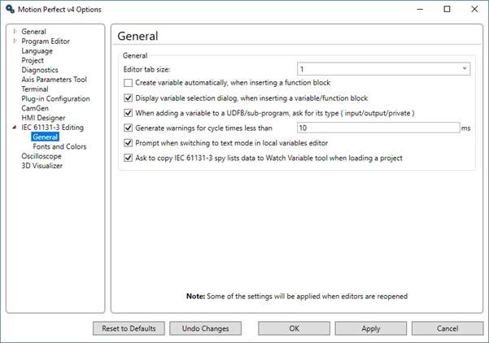

Options – IEC 61131-3 Editing - General

The general options can be used to set the following:
-
The
tab size in the editor.
-
If a
variable is created automatically when creating a function block.
-
If
the variable selection dialog is displayed when inserting a variable or
function block.
-
Whether
or not to ask for the type of a variable when inserting into a user defined
function block or sub-program.
-
If a
warning is to be given for cycle times less that a specified duration (in
milliseconds).
-
If a
prompt is to be given when switching to text mode in the local variables
editor.
-
If
the user is prompted to copy any spy lists to the Watch Variables tool.
Spy List functionality has now been integrated into the Watch
Variables tool to provide a more unified way of examining variables during
program debugging.